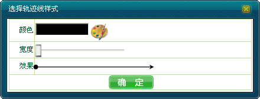
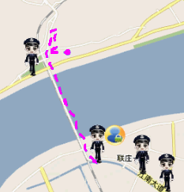
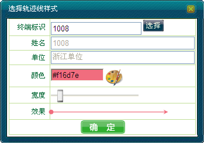

调度员可以控制是否开启标示单个或多个移动用户在一段时间内的移动轨迹。
如果开启实时轨迹功能，则在地图上，会用线条的方式实时地显示该用户的行驶路线，并且当鼠标位于某点时，会相应显示该点的时间。如果关闭实时轨迹功能，则表示用户行驶路线的线条消失。
调度员可以通过地图右键操作以及呼叫面板两种方式开启/关闭“实时轨迹”功能。
1）地图上选中移动用户。
2）右键单击［应用业务/开启实时轨迹］，弹出“选择轨迹线样式”对话框，如下图1所示。

图1. 选择轨迹线样式对话框
3）选择线条的“颜色”、“宽度”，此时，在窗口的最下方会形象地显示轨迹线的样式效果。
4）单击＜确定＞，在地图上，则会用线条的方式实时地显示该用户的行驶轨迹，并且当鼠标位于某点时，会显示该点的时间，如图2所示。

图2. 用户移动轨迹
5）若不需要实时轨迹显示功能，则右键单击［应用业务/关闭实时轨迹］，此时，在地图上的表示用户行驶轨迹的线条消失。
1）在系统操作菜单栏中单击［调度功能/呼叫面板］，弹出“呼叫面板”对话框。
2）单击“应用业务”模块中的“实时轨迹”，弹出“选择轨迹线样式”对话框。
3）输入终端标识号或者单击右侧＜选择＞添加要开启或关闭实时轨迹的移动用户，选择线条的“颜色”、“宽度”，此时，在窗口的最下方会形象地显示轨迹线的样式效果，如下图3所示。

图3. 呼叫面板选择轨迹线样式
4）单击＜确定＞，在地图上，则会用线条的方式实时地显示该用户的行驶轨迹，并且当鼠标位于某点时，会显示该点的时间。
5）若不需要实时轨迹显示功能，则在地图上选中移动用户，右键单击［应用业务/关闭实时轨迹］，此时，在地图上的表示用户行驶轨迹的线条消失。
 说明：
说明：
若当前用户处于隐藏状态，则需先开启实时位置显示功能，再开启实时轨迹。
Copyright © 2012 Eastcom, Inc. All rights reserved. |
||